Chapter 3: Composition of Substances and Solutions¶
Introduction¶
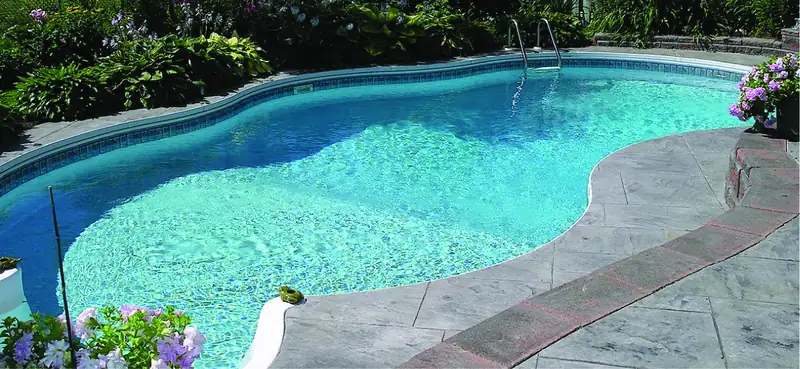
Swimming pools have long been a popular means of recreation, exercise, and physical therapy. Since it is impractical to refill large pools with fresh water on a frequent basis, pool water is regularly treated with chemicals to prevent the growth of harmful bacteria and algae. Proper pool maintenance requires regular additions of various chemical compounds in carefully measured amounts. For example, the relative amount of calcium ion, Ca2+, in the water should be maintained within certain limits to prevent eye irritation and avoid damage to the pool bed and plumbing. To maintain proper calcium levels, calcium cations are added to the water in the form of an ionic compound that also contains anions; thus, it is necessary to know both the relative amount of Ca2+ in the compound and the volume of water in the pool in order to achieve the proper calcium level. Quantitative aspects of the composition of substances (such as the calcium-containing compound) and mixtures (such as the pool water) are the subject of this chapter.
3.1 Formula Mass and the Mole Concept¶
Learning Objectives
By the end of this section, you will be able to:
- Calculate formula masses for covalent and ionic compounds
- Define the amount unit mole and the related quantity Avogadro’s number
- Explain the relation between mass, moles, and numbers of atoms or molecules, and perform calculations deriving these quantities from one another
Many argue that modern chemical science began when scientists started exploring the quantitative as well as the qualitative aspects of chemistry. For example, Dalton’s atomic theory was an attempt to explain the results of measurements that allowed him to calculate the relative masses of elements combined in various compounds. Understanding the relationship between the masses of atoms and the chemical formulas of compounds allows us to quantitatively describe the composition of substances.
Formula Mass¶
An earlier chapter of this text described the development of the atomic mass unit, the concept of average atomic masses, and the use of chemical formulas to represent the elemental makeup of substances. These ideas can be extended to calculate the formula mass of a substance by summing the average atomic masses of all the atoms represented in the substance’s formula.
Formula Mass for Covalent Substances¶
For covalent substances, the formula represents the numbers and types of atoms composing a single molecule of the substance; therefore, the formula mass may be correctly referred to as a molecular mass. Consider chloroform (CHCl3), a covalent compound once used as a surgical anesthetic and now primarily used in the production of tetrafluoroethylene, the building block for the "anti-stick" polymer, Teflon. The molecular formula of chloroform indicates that a single molecule contains one carbon atom, one hydrogen atom, and three chlorine atoms. The average molecular mass of a chloroform molecule is therefore equal to the sum of the average atomic masses of these atoms. Figure 3.2 outlines the calculations used to derive the molecular mass of chloroform, which is 119.37 amu.
![A table and diagram are shown. The table is made up of six columns and five rows. The header row reads: “Element,” “Quantity,” a blank space, “Average atomic mass (a m u),” a blank space, and “Subtotal (a m u).” The first column contains the symbols “C,” “H,” “C l” and a blank, merged cell that runs the width of the first five columns. The second column contains the numbers “1,” “1,” and “3” as well as the merged cell. The third column contains the multiplication symbol in each cell except for the last, merged cell. The fourth column contains the numbers “12.01,” “1.008,” and “35.45” as well as the merged cell. The fifth column contains the symbol “=” in each cell except for the last, merged cell. The sixth column contains the values “12.01,” “1.008,” “106.35,” and “119.37.” There is a thick black line below the number 106.35. The merged cell under the first five columns reads “Molecular mass.” To the left of the table is a diagram of a molecule. Three green spheres are attached to a slightly smaller black sphere, which is also attached to a smaller white sphere. The green spheres lie beneath and to the sides of the black sphere while the white sphere is located straight up from the black sphere.](img/cnx-chem-03-01-chloroform.webp)
Likewise, the molecular mass of an aspirin molecule, C9H8O4, is the sum of the atomic masses of nine carbon atoms, eight hydrogen atoms, and four oxygen atoms, which amounts to 180.15 amu (Figure 3.3).
![A table and diagram are shown. The table is made up of six columns and five rows. The header row reads: “Element,” “Quantity,” a blank space, “Average atomic mass (a m u),” a blank space, and “Subtotal (a m u).” The first column contains the symbols “C,” “H,” “O,” and a merged cell. The merged cell runs the length of the first five columns. The second column contains the numbers “9,” “8,” and “4” as well as the merged, cell. The third column contains the multiplication symbol in each cell except for the last, merged cell. The fourth column contains the numbers “12.01,” “1.008,” and “16.00” as well as the merged cell. The fifth column contains the symbol “=” in each cell except for the last, merged cell. The sixth column contains the values: “108.09,” “8.064,” “64.00,” and “180.15.” There is a thick black line below the number 64.00. The merged cell under the first five columns reads “Molecular mass.” To the left of the table is a diagram of a molecule. Six black spheres are located in a six-sided ring and connected by alternating double and single black bonds. Attached to each of the four black spheres is one smaller white sphere. Attached to the farthest right black sphere is a red sphere, connected to two more black spheres, all in a row. Attached to the last black sphere of that row are two more white spheres. Attached to the first black sphere of that row is another red sphere. A black sphere, attached to two red spheres and a white sphere is attached to the black sphere on the top right of the six-sided ring.](img/cnx-chem-03-01-aspirin.webp)
Example 3.1 Computing Molecular Mass for a Covalent Compound
Ibuprofen, C13H18O2, is a covalent compound and the active ingredient in several popular nonprescription pain medications, such as Advil and Motrin. What is the molecular mass (amu) for this compound?
Solution
Molecules of this compound are composed of 13 carbon atoms, 18 hydrogen atoms, and 2 oxygen atoms. Following the approach described above, the average molecular mass for this compound is therefore:
![A table is shown that is made up of six columns and five rows. The header row reads: “Element,” “Quantity,” a blank space, “Average atomic mass (a m u),” a blank space, and “Subtotal (a m u).” The first column contains the symbols “C,” “H,” “O,” and a merged cell. The merged cell runs the length of the first five columns. The second column contains the numbers “13,” “8,” and “2” as well as the merged cell. The third column contains the multiplication symbol in each cell except for the last, merged cell. The fourth column contains the numbers “12.01,” “1.008,” and “16.00” as well as the merged cell. The fifth column contains the symbol “=” in each cell except for the last, merged cell. The sixth column contains the values “156.13,” “18.114,” “32.00,” and “206.27.” There is a thick black line below the number 32.00. The merged cell under the first five columns reads “Molecular mass.” To the right is a ball-and-stick model of the structure. At the center, it shows six black spheres arranged in a six-sided ring with alternating double bonds. The two black spheres at the top and bottom of the six-sided ring are each bonded to one, smaller, white sphere. The black sphere on the left side of the six-sided ring is connect to another black sphere. This sphere is connected to two smaller, white spheres and another black sphere. This black sphere is connected to one, smaller white sphere, and two other black spheres. Each of these last two black spheres is connected to two smaller, white spheres. The black sphere on the right side of the six-sided ring is connected to another black sphere. This black sphere is connected to one smaller, white sphere and two other black spheres. The black sphere that is connected to it and is situated to the top right is connected to two smaller, white spheres. The black sphere connected towards the bottom right is connected to two red spheres. It forms a double bond with one of these red spheres and the other red sphere is connected to a smaller, white sphere.](img/cnx-chem-03-01-ibuprofenmass-img.webp)
Check Your Learning
Acetaminophen, C8H9NO2, is a covalent compound and the active ingredient in several popular nonprescription pain medications, such as Tylenol. What is the molecular mass (amu) for this compound?
Answer:
151.16 amu
Formula Mass for Ionic Compounds¶
Ionic compounds are composed of discrete cations and anions combined in ratios to yield electrically neutral bulk matter. The formula mass for an ionic compound is calculated in the same way as the formula mass for covalent compounds: by summing the average atomic masses of all the atoms in the compound’s formula. Keep in mind, however, that the formula for an ionic compound does not represent the composition of a discrete molecule, so it may not correctly be referred to as the “molecular mass.”
As an example, consider sodium chloride, NaCl, the chemical name for common table salt. Sodium chloride is an ionic compound composed of sodium cations, Na+, and chloride anions, Cl−, combined in a 1:1 ratio. The formula mass for this compound is computed as 58.44 amu (see Figure 3.4).
![A table and diagram are shown. The table is made up of six columns and four rows. The header row reads: “Element,” “Quantity,” a blank space, “Average atomic mass (a m u),” a blank space and “Subtotal (a m u).” The first column contains the symbols “N a”, “C l,” and a merged cell. The merged cell runs the length of the first five columns. The second column contains the numbers “1” and “1” as well as the merged cell. The third column contains the multiplication symbol in each cell except for the last, merged cell. The fourth column contains the numbers “22.99” and “35.45” as well as the merged cell. The fifth column contains the symbol “=” in each cell except for the last, merged cell. The sixth column contains the values “22.99,” “35.45,” and “58.44.” There is a thick black line below the number “35.45.” The merged cell under the first five columns reads “Formula mass.” To the left of the table is a diagram of a chemical structure. The diagram shows green and purple spheres placed in an alternating pattern, making up the corners of eight stacked cubes to form one larger cube. The green spheres are slightly smaller than the purple spheres.](img/cnx-chem-03-01-saltmass.webp)
Note that the average masses of neutral sodium and chlorine atoms were used in this computation, rather than the masses for sodium cations and chlorine anions. This approach is perfectly acceptable when computing the formula mass of an ionic compound. Even though a sodium cation has a slightly smaller mass than a sodium atom (since it is missing an electron), this difference will be offset by the fact that a chloride anion is slightly more massive than a chloride atom (due to the extra electron). Moreover, the mass of an electron is negligibly small with respect to the mass of a typical atom. Even when calculating the mass of an isolated ion, the missing or additional electrons can generally be ignored, since their contribution to the overall mass is negligible, reflected only in the nonsignificant digits that will be lost when the computed mass is properly rounded. The few exceptions to this guideline are very light ions derived from elements with precisely known atomic masses.
Example 3.2 Computing Formula Mass for an Ionic Compound
Aluminum sulfate, Al2(SO4)3, is an ionic compound that is used in the manufacture of paper and in various water purification processes. What is the formula mass (amu) of this compound?
Solution
The formula for this compound indicates it contains Al3+ and SO42− ions combined in a 2:3 ratio. For purposes of computing a formula mass, it is helpful to rewrite the formula in the simpler format, Al2S3O12. Following the approach outlined above, the formula mass for this compound is calculated as follows:
![A table is shown that is made up of six columns and five rows. The header row reads: “Element,” “Quantity,” a blank space, “Average atomic mass (a m u),” a blank space, and “Subtotal (a m u).” The first column contains the symbols “A l,” “S,” “O,” and a merged cell. The merged cell runs the length of the first five columns. The second column contains the numbers “2,” “3,” and “12” as well as the merged cell. The third column contains the multiplication symbol in each cell except for the last, merged cell. The fourth column contains the numbers “26.98,” “32.06,” and “16.00” as well as the merged cell. The fifth column contains the symbol “=” in each cell except for the last, merged cell. The sixth column contains the values “53.96,” “96.18,” “192.00,” and “342.14.” There is a thick black line under the number 192.00. The merged cell under the first five columns reads “Formula mass.” To the right of this table is a ball-and-stick structure. It shows yellow and grey sphere connected to red spheres in a complex pattern. The yellow and grey spheres are similar in size, but the red spheres appear to be smaller by comparison.](img/cnx-chem-03-01-alsulfatemass-img.webp)
Check Your Learning
Calcium phosphate, Ca3(PO4)2, is an ionic compound and a common anti-caking agent added to food products. What is the formula mass (amu) of calcium phosphate?
Answer:
310.18 amu
The Mole¶
The identity of a substance is defined not only by the types of atoms or ions it contains, but by the quantity of each type of atom or ion. For example, water, H2O, and hydrogen peroxide, H2O2, are alike in that their respective molecules are composed of hydrogen and oxygen atoms. However, because a hydrogen peroxide molecule contains two oxygen atoms, as opposed to the water molecule, which has only one, the two substances exhibit very different properties. Today, sophisticated instruments allow the direct measurement of these defining microscopic traits; however, the same traits were originally derived from the measurement of macroscopic properties (the masses and volumes of bulk quantities of matter) using relatively simple tools (balances and volumetric glassware). This experimental approach required the introduction of a new unit for amount of substances, the mole, which remains indispensable in modern chemical science.
The mole is an amount unit similar to familiar units like pair, dozen, gross, etc. It provides a specific measure of the number of atoms or molecules in a sample of matter. One Latin connotation for the word “mole” is “large mass” or “bulk,” which is consistent with its use as the name for this unit. The mole provides a link between an easily measured macroscopic property, bulk mass, and an extremely important fundamental property, number of atoms, molecules, and so forth. A mole of substance is that amount in which there are 6.02214076 \(\times\) 1023 discrete entities (atoms or molecules). This large number is a fundamental constant known as Avogadro’s number (NA) or the Avogadro constant in honor of Italian scientist Amedeo Avogadro. This constant is properly reported with an explicit unit of “per mole,” a conveniently rounded version being 6.022 \(\times\) 1023/mol.
Consistent with its definition as an amount unit, 1 mole of any element contains the same number of atoms as 1 mole of any other element. The masses of 1 mole of different elements, however, are different, since the masses of the individual atoms are drastically different. The molar mass of an element (or compound) is the mass in grams of 1 mole of that substance, a property expressed in units of grams per mole (g/mol) (see Figure 3.5).
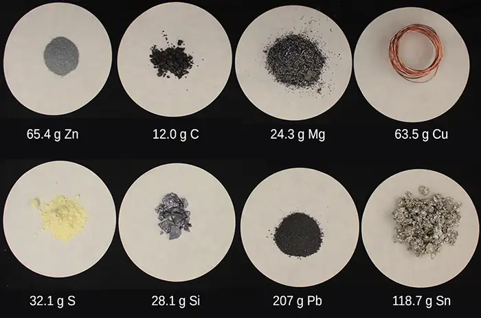
The molar mass of any substance is numerically equivalent to its atomic or formula weight in amu. Per the amu definition, a single 12C atom weighs 12 amu (its atomic mass is 12 amu). A mole of 12C weighs 12 g (its molar mass is 12 g/mol). This relationship holds for all elements, since their atomic masses are measured relative to that of the amu-reference substance, 12C. Extending this principle, the molar mass of a compound in grams is likewise numerically equivalent to its formula mass in amu (Figure 3.6).
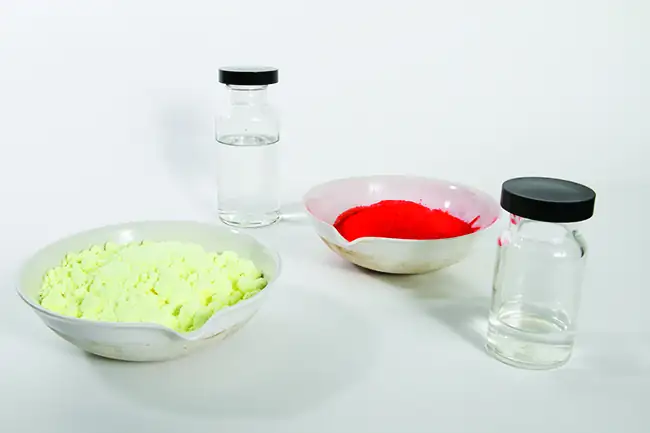
| Element | Average Atomic Mass (amu) | Molar Mass (g/mol) | Atoms/Mole |
|---|---|---|---|
| C | 12.01 | 12.01 | 6.022 \(\times\) 1023 |
| H | 1.008 | 1.008 | 6.022 \(\times\) 1023 |
| O | 16.00 | 16.00 | 6.022 \(\times\) 1023 |
| Na | 22.99 | 22.99 | 6.022 \(\times\) 1023 |
| Cl | 35.45 | 35.45 | 6.022 \(\times\) 1023 |
While atomic mass and molar mass are numerically equivalent, keep in mind that they are vastly different in terms of scale, as represented by the vast difference in the magnitudes of their respective units (amu versus g). To appreciate the enormity of the mole, consider a small drop of water weighing about 0.03 g (see Figure 3.7). Although this represents just a tiny fraction of 1 mole of water (~18 g), it contains more water molecules than can be clearly imagined. If the molecules were distributed equally among the roughly seven billion people on earth, each person would receive more than 100 billion molecules.
Link to Learning
The mole is used in chemistry to represent 6.022 \(\times\) 1023 of something, but it can be difficult to conceptualize such a large number. Watch this video and then complete the “Think” questions that follow. Explore more about the mole by reviewing the information under “Dig Deeper.”
The relationships between formula mass, the mole, and Avogadro’s number can be applied to compute various quantities that describe the composition of substances and compounds, as demonstrated in the next several example problems.
Example 3.3 Deriving Moles from Grams for an Element
According to nutritional guidelines from the US Department of Agriculture, the estimated average requirement for dietary potassium is 4.7 g. What is the estimated average requirement of potassium in moles?
Solution
The mass of K is provided, and the corresponding amount of K in moles is requested. Referring to the periodic table, the atomic mass of K is 39.10 amu, and so its molar mass is 39.10 g/mol. The given mass of K (4.7 g) is a bit more than one-tenth the molar mass (39.10 g), so a reasonable “ballpark” estimate of the number of moles would be slightly greater than 0.1 mol.
The molar amount of a substance may be calculated by dividing its mass (g) by its molar mass (g/mol):
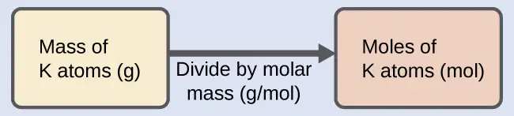
The factor-label method supports this mathematical approach since the unit “g” cancels and the answer has units of “mol:”
The calculated magnitude (0.12 mol K) is consistent with our ballpark expectation, since it is a bit greater than 0.1 mol.
Check Your Learning
Beryllium is a light metal used to fabricate transparent X-ray windows for medical imaging instruments. How many moles of Be are in a thin-foil window weighing 3.24 g?
Answer:
0.360 mol
Example 3.4 Deriving Grams from Moles for an Element
A liter of air contains 9.2 \(\times\) 10−4 mol argon. What is the mass of Ar in a liter of air?
Solution
The molar amount of Ar is provided and must be used to derive the corresponding mass in grams. Since the amount of Ar is less than 1 mole, the mass will be less than the mass of 1 mole of Ar, approximately 40 g. The molar amount in question is approximately one-one thousandth (~10−3) of a mole, and so the corresponding mass should be roughly one-one thousandth of the molar mass (~0.04 g):
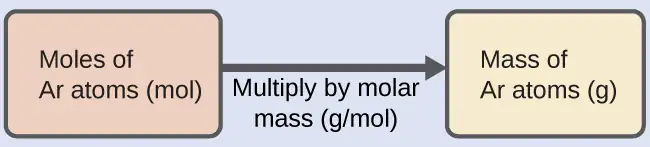
In this case, logic dictates (and the factor-label method supports) multiplying the provided amount (mol) by the molar mass (g/mol):
The result is in agreement with our expectations, around 0.04 g Ar.
Check Your Learning
What is the mass of 2.561 mol of gold?
Answer:
504.5 g
Example 3.5 Deriving Number of Atoms from Mass for an Element
Copper is commonly used to fabricate electrical wire (Figure 3.8). How many copper atoms are in 5.00 g of copper wire?
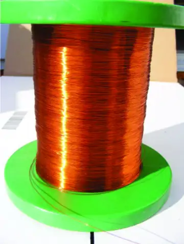
Solution
The number of Cu atoms in the wire may be conveniently derived from its mass by a two-step computation: first calculating the molar amount of Cu, and then using Avogadro’s number (NA) to convert this molar amount to number of Cu atoms:
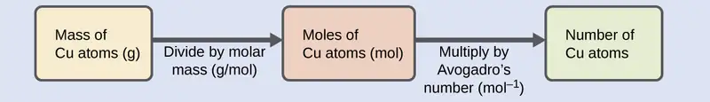
Considering that the provided sample mass (5.00 g) is a little less than one-tenth the mass of 1 mole of Cu (~64 g), a reasonable estimate for the number of atoms in the sample would be on the order of one-tenth NA, or approximately 1022 Cu atoms. Carrying out the two-step computation yields:
The factor-label method yields the desired cancellation of units, and the computed result is on the order of 1022 as expected.
Check Your Learning
A prospector panning for gold in a river collects 15.00 g of pure gold. How many Au atoms are in this quantity of gold?
Answer:
4.586 \(\times\) 1022 Au atoms
Example 3.6 Deriving Moles from Grams for a Compound
Our bodies synthesize protein from amino acids. One of these amino acids is glycine, which has the molecular formula C2H5O2N. How many moles of glycine molecules are contained in 28.35 g of glycine?
Solution
Derive the number of moles of a compound from its mass following the same procedure used for an element in Example 3.3:
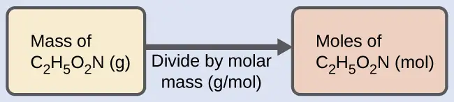
The molar mass of glycine is required for this calculation, and it is computed in the same fashion as its molecular mass. One mole of glycine, C2H5O2N, contains 2 moles of carbon, 5 moles of hydrogen, 2 moles of oxygen, and 1 mole of nitrogen:
![A table is shown that is made up of six columns and six rows. The header row reads: “Element,” “Quantity (mol element / mol compound,” a blank space, “Molar mass (g / mol element),” a blank space, and “Subtotal (a m u).” The first column contains the symbols “C,” “H,” “O,” “N,” and a merged cell. The merged cell runs the width of the first five columns. The second column contains the numbers “2,” “5,” “2,” and “1” as well as the merged cell. The third column contains the multiplication symbol in each cell except for the last, merged cell. The fourth column contains the numbers “12.01,” “1.008,” “16.00,” and “14.007” as well as the merged cell. The fifth column contains the symbol “=” in each cell except for the last, merged cell. The sixth column contains the values “24.02,” “5.040,” “32.00,” “14.007,” and “75.07.” There is a thick black line under the number 14.007. The merged cell under the first five columns reads “Molar mass (g / mol compound). There is a ball-and-stick drawing to the right of this table. It shows a black sphere that forms a double bond with a slightly smaller red sphere, a single bond with another red sphere, and a single bond with another black sphere. The red sphere that forms a single bond with the black sphere also forms a single bond with a smaller, white sphere. The second black sphere forms a single bond with a smaller, white sphere and a smaller blue sphere. The blue sphere forms a single bond with two smaller, white spheres each.](img/cnx-chem-03-01-glycinemass-img.webp)
The provided mass of glycine (~28 g) is a bit more than one-third the molar mass (~75 g/mol), so the computed result is expected to be a bit greater than one-third of a mole (~0.33 mol). Dividing the compound’s mass by its molar mass yields:
This result is consistent with the rough estimate.
Check Your Learning
How many moles of sucrose, C12H22O11, are in a 25-g sample of sucrose?
Answer:
0.073 mol
Example 3.7 Deriving Grams from Moles for a Compound
Vitamin C is a covalent compound with the molecular formula C6H8O6. The recommended daily dietary allowance of vitamin C for children aged 4–8 years is 1.42 \(\times\) 10−4 mol. What is the mass of this allowance in grams?
Solution
As for elements, the mass of a compound can be derived from its molar amount as shown:
The molar mass for this compound is computed to be 176.124 g/mol. The given number of moles is a very small fraction of a mole (~10−4 or one-ten thousandth); therefore, the corresponding mass is expected to be about one-ten thousandth of the molar mass (~0.02 g). Performing the calculation yields:
This is consistent with the anticipated result.
Check Your Learning
What is the mass of 0.443 mol of hydrazine, N2H4?
Answer:
14.2 g
Example 3.8 Deriving the Number of Atoms and Molecules from the Mass of a Compound
A packet of an artificial sweetener contains 40.0 mg of saccharin (C7H5NO3S), which has the structural formula:
![A diagram of a molecule is shown that is made up of two ring structures attached together. The left ring is hexagonal in shape with C atoms at each point of the ring and alternating single and double bonds. A double bond occurs between the C atom at the top vertex of the hexagon and the C atom down and to the left of it. The C atoms on the left, top, and bottom of the structure form a single bond to an H atom each. The two right C atoms make up one side of a pentagon and the other points of the pentagon are made up of a C atom, an N atom, and an S atom if read clockwise. The C atom forms a double bond with an O atom. The N atom forms a single bond with an H atom. The S atom forms two double bonds to two O atoms.](img/cnx-chem-03-02-saccharin-img.webp)
Given that saccharin has a molar mass of 183.18 g/mol, how many saccharin molecules are in a 40.0-mg (0.0400-g) sample of saccharin? How many carbon atoms are in the same sample?
Solution
The number of molecules in a given mass of compound is computed by first deriving the number of moles, as demonstrated in Example 3.6, and then multiplying by Avogadro’s number:
![A diagram of three boxes connected by a right-facing arrow in between each is shown. The box on the left contains the phrase, “Mass of C subscript seven H subscript five N O subscript three S ( g ),” the middle box reads, “Moles of C subscript seven H subscript five N O subscript three S ( mol ),” while the one on the right contains the phrase, “Number of C subscript seven H subscript five N O subscript three S molecules.” There is a phrase under the left arrow that says, “Divide by molar mass (g / mol),” and under the right arrow it states, “Multiply by Avogadro’s number ( mol superscript negative one).”](img/cnx-chem-03-02-sacch-img-3278.webp)
Using the provided mass and molar mass for saccharin yields:
The compound’s formula shows that each molecule contains seven carbon atoms, and so the number of C atoms in the provided sample is:
Check Your Learning
How many C4H10 molecules are contained in 9.213 g of this compound? How many hydrogen atoms?
Answer:
9.545 \(\times\) 1022 molecules C4 H10; 9.545 \(\times\) 1023 atoms H
How Sciences Interconnect: Counting Neurotransmitter Molecules in the Brain
The brain is the control center of the central nervous system (Figure 3.9). It sends and receives signals to and from muscles and other internal organs to monitor and control their functions; it processes stimuli detected by sensory organs to guide interactions with the external world; and it houses the complex physiological processes that give rise to our intellect and emotions. The broad field of neuroscience spans all aspects of the structure and function of the central nervous system, including research on the anatomy and physiology of the brain. Great progress has been made in brain research over the past few decades, and the BRAIN Initiative, a federal initiative announced in 2013, aims to accelerate and capitalize on these advances through the concerted efforts of various industrial, academic, and government agencies (more details available at www.whitehouse.gov/share/brain-initiative).
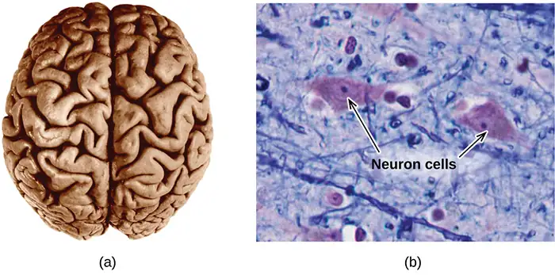
Specialized cells called neurons transmit information between different parts of the central nervous system by way of electrical and chemical signals. Chemical signaling occurs at the interface between different neurons when one of the cells releases molecules (called neurotransmitters) that diffuse across the small gap between the cells (called the synapse) and bind to the surface of the other cell. These neurotransmitter molecules are stored in small intracellular structures called vesicles that fuse to the cell membrane and then break open to release their contents when the neuron is appropriately stimulated. This process is called exocytosis (see Figure 3.10). One neurotransmitter that has been very extensively studied is dopamine, C8H11NO2. Dopamine is involved in various neurological processes that impact a wide variety of human behaviors. Dysfunctions in the dopamine systems of the brain underlie serious neurological diseases such as Parkinson’s and schizophrenia.
![Two diagrams are shown. In the upper left corner of the left diagram, an oval with a darkened center that has five short, branching appendages and one long tail-like appendage is shown and connected by an arrow to another image. This image depicts a close-up view of the oval section and its interaction with the tail-like portion of a similar structure. The close up view is composed of a narrow tube labeled “neuron” leading down to a bulbous base that holds thirteen circles filled with small dots. These circles are labeled “vesicles.” The base of the bulbous structure is next to a curved object labeled “neuron” and very small dots are emerging from the bulb’s base and flowing toward the curved structure. The gap in between the two structures is labeled “synapse,” and the small dots are labeled “neurotransmitters.” The diagram on the right depicts a molecule composed of six black spheres connected by alternating double and single bonds in a hexagonal ring with other spheres attached to it. Three of the black spheres are connected to one smaller, white sphere each. Two of the black balls are connected to a smaller red sphere each. Each red sphere is connected to a smaller, white sphere. One black sphere is connected to another black sphere. It is connected to two smaller, white spheres and another black sphere. This second black sphere is connected to two smaller white spheres, and a slightly smaller blue sphere. The blue sphere is connected to two smaller, white spheres.](img/cnx-chem-03-01-exocytosis-88f6.webp)
One important aspect of the complex processes related to dopamine signaling is the number of neurotransmitter molecules released during exocytosis. Since this number is a central factor in determining neurological response (and subsequent human thought and action), it is important to know how this number changes with certain controlled stimulations, such as the administration of drugs. It is also important to understand the mechanism responsible for any changes in the number of neurotransmitter molecules released—for example, some dysfunction in exocytosis, a change in the number of vesicles in the neuron, or a change in the number of neurotransmitter molecules in each vesicle.
Significant progress has been made recently in directly measuring the number of dopamine molecules stored in individual vesicles and the amount actually released when the vesicle undergoes exocytosis. Using miniaturized probes that can selectively detect dopamine molecules in very small amounts, scientists have determined that the vesicles of a certain type of mouse brain neuron contain an average of 30,000 dopamine molecules per vesicle (about \(5\:\times\:{10}^{-20}\) mol or 50 zmol). Analysis of these neurons from mice subjected to various drug therapies shows significant changes in the average number of dopamine molecules contained in individual vesicles, increasing or decreasing by up to three-fold, depending on the specific drug used. These studies also indicate that not all of the dopamine in a given vesicle is released during exocytosis, suggesting that it may be possible to regulate the fraction released using pharmaceutical therapies.1
3.2 Determining Empirical and Molecular Formulas¶
Learning Objectives
By the end of this section, you will be able to:
- Compute the percent composition of a compound
- Determine the empirical formula of a compound
- Determine the molecular formula of a compound
The previous section discussed the relationship between the bulk mass of a substance and the number of atoms or molecules it contains (moles). Given the chemical formula of the substance, one may determine the amount of the substance (moles) from its mass, and vice versa. But what if the chemical formula of a substance is unknown? In this section, these same principles will be applied to derive the chemical formulas of unknown substances from experimental mass measurements.
Percent Composition¶
The elemental makeup of a compound defines its chemical identity, and chemical formulas are the most succinct way of representing this elemental makeup. When a compound’s formula is unknown, measuring the mass of each of its constituent elements is often the first step in the process of determining the formula experimentally. The results of these measurements permit the calculation of the compound’s percent composition, defined as the percentage by mass of each element in the compound. For example, consider a gaseous compound composed solely of carbon and hydrogen. The percent composition of this compound could be represented as follows:
If analysis of a 10.0-g sample of this gas showed it to contain 2.5 g H and 7.5 g C, the percent composition would be calculated to be 25% H and 75% C:
Example 3.9 Calculation of Percent Composition
Analysis of a 12.04-g sample of a liquid compound composed of carbon, hydrogen, and nitrogen showed it to contain 7.34 g C, 1.85 g H, and 2.85 g N. What is the percent composition of this compound?
Solution
To calculate percent composition, divide the experimentally derived mass of each element by the overall mass of the compound, and then convert to a percentage:
The analysis results indicate that the compound is 61.0% C, 15.4% H, and 23.7% N by mass.
Check Your Learning
A 24.81-g sample of a gaseous compound containing only carbon, oxygen, and chlorine is determined to contain 3.01 g C, 4.00 g O, and 17.81 g Cl. What is this compound’s percent composition?
Answer:
12.1% C, 16.1% O, 71.79% Cl
Determining Percent Composition from Molecular or Empirical Formulas¶
Percent composition is also useful for evaluating the relative abundance of a given element in different compounds of known formulas. As one example, consider the common nitrogen-containing fertilizers ammonia (NH3), ammonium nitrate (NH4NO3), and urea (CH4N2O). The element nitrogen is the active ingredient for agricultural purposes, so the mass percentage of nitrogen in the compound is a practical and economic concern for consumers choosing among these fertilizers. For these sorts of applications, the percent composition of a compound is easily derived from its formula mass and the atomic masses of its constituent elements. A molecule of NH3 contains one N atom weighing 14.01 amu and three H atoms weighing a total of (3 \(\times\) 1.008 amu) = 3.024 amu. The formula mass of ammonia is therefore (14.01 amu + 3.024 amu) = 17.03 amu, and its percent composition is:
This same approach may be taken considering a pair of molecules, a dozen molecules, or a mole of molecules, etc. The latter amount is most convenient and would simply involve the use of molar masses instead of atomic and formula masses, as demonstrated Example 3.10. As long as the molecular or empirical formula of the compound in question is known, the percent composition may be derived from the atomic or molar masses of the compound's elements.
Example 3.10 Determining Percent Composition from a Molecular Formula
Aspirin is a compound with the molecular formula C9H8O4. What is its percent composition?
Solution
To calculate the percent composition, the masses of C, H, and O in a known mass of C9H8O4 are needed. It is convenient to consider 1 mol of C9H8O4 and use its molar mass (180.159 g/mole, determined from the chemical formula) to calculate the percentages of each of its elements:
Note that these percentages sum to equal 100.00% when appropriately rounded.
Check Your Learning
To three significant digits, what is the mass percentage of iron in the compound Fe2O3?
Answer:
69.9% Fe
Determination of Empirical Formulas¶
As previously mentioned, the most common approach to determining a compound’s chemical formula is to first measure the masses of its constituent elements. However, keep in mind that chemical formulas represent the relative numbers, not masses, of atoms in the substance. Therefore, any experimentally derived data involving mass must be used to derive the corresponding numbers of atoms in the compound. This is accomplished using molar masses to convert the mass of each element to a number of moles. These molar amounts are used to compute whole-number ratios that can be used to derive the empirical formula of the substance. Consider a sample of compound determined to contain 1.71 g C and 0.287 g H. The corresponding numbers of atoms (in moles) are:
Thus, this compound may be represented by the formula C0.142H0.284. Per convention, formulas contain whole-number subscripts, which can be achieved by dividing each subscript by the smaller subscript:
(Recall that subscripts of “1” are not written but rather assumed if no other number is present.)
The empirical formula for this compound is thus CH2. This may or may not be the compound’s molecular formula as well; however, additional information is needed to make that determination (as discussed later in this section).
Consider as another example a sample of compound determined to contain 5.31 g Cl and 8.40 g O. Following the same approach yields a tentative empirical formula of:
In this case, dividing by the smallest subscript still leaves us with a decimal subscript in the empirical formula. To convert this into a whole number, multiply each of the subscripts by two, retaining the same atom ratio and yielding Cl2O7 as the final empirical formula.
In summary, empirical formulas are derived from experimentally measured element masses by:
- Deriving the number of moles of each element from its mass
- Dividing each element’s molar amount by the smallest molar amount to yield subscripts for a tentative empirical formula
- Multiplying all coefficients by an integer, if necessary, to ensure that the smallest whole-number ratio of subscripts is obtained
Figure 3.11 outlines this procedure in flow chart fashion for a substance containing elements A and X.
![A flow chart is shown that is composed of six boxes, two of which are connected together by a right facing arrow and located above two more that are also connected by a right-facing arrow. These two rows of boxes are connected vertically by a line that leads to a right-facing arrow and the last two boxes, connected by a final right facing arrow. The first two upper boxes have the phrases, “Mass of A atoms” and “Moles of A atoms” respectively, while the arrow that connects them has the phrase, “Divide by molar mass,” written below it. The second two bottom boxes have the phrases, “Mass of X atoms” and “Moles of X atoms” respectively, while the arrow that connects them has the phrase, “Divide by molar mass” written below it. The arrow that connects the upper and lower boxes to the last two boxes has the phrase “Divide by lowest number of moles” written below it. The last two boxes have the phrases, “A to X mole ratio” and “Empirical formula” respectively, while the arrow that connects them has the phrase, “Convert ratio to lowest whole numbers” written below it.](img/cnx-chem-03-03-empform.webp)
Example 3.11 Determining a Compound’s Empirical Formula from the Masses of Its Elements
A sample of the black mineral hematite (Figure 3.12), an oxide of iron found in many iron ores, contains 34.97 g of iron and 15.03 g of oxygen. What is the empirical formula of hematite?
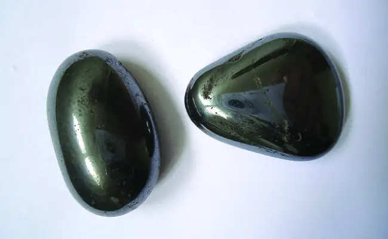
Solution
This problem provides the mass in grams of each element. Begin by finding the moles of each:
Next, derive the iron-to-oxygen molar ratio by dividing by the lesser number of moles:
The ratio is 1.000 mol of iron to 1.500 mol of oxygen (Fe1O1.5). Finally, multiply the ratio by two to get the smallest possible whole number subscripts while still maintaining the correct iron-to-oxygen ratio:
The empirical formula is Fe2O3.
Check Your Learning
What is the empirical formula of a compound if a sample contains 0.130 g of nitrogen and 0.370 g of oxygen?
Answer:
N2O5
Link to Learning
For additional worked examples illustrating the derivation of empirical formulas, watch the brief video clip.
Deriving Empirical Formulas from Percent Composition¶
Finally, with regard to deriving empirical formulas, consider instances in which a compound’s percent composition is available rather than the absolute masses of the compound’s constituent elements. In such cases, the percent composition can be used to calculate the masses of elements present in any convenient mass of compound; these masses can then be used to derive the empirical formula in the usual fashion.
Example 3.12 Determining an Empirical Formula from Percent Composition
The bacterial fermentation of grain to produce ethanol forms a gas with a percent composition of 27.29% C and 72.71% O (Figure 3.13). What is the empirical formula for this gas?
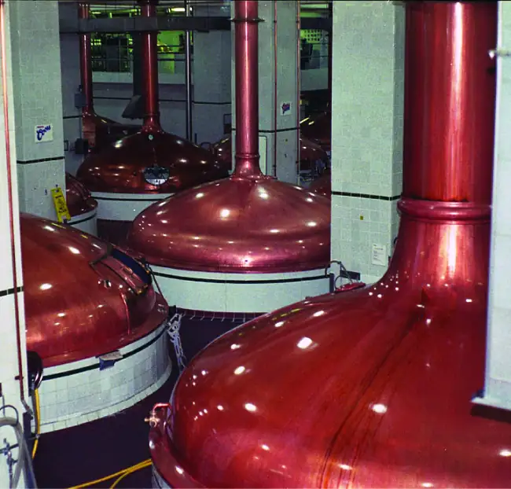
Solution
Since the scale for percentages is 100, it is most convenient to calculate the mass of elements present in a sample weighing 100 g. The calculation is “most convenient” because, per the definition for percent composition, the mass of a given element in grams is numerically equivalent to the element’s mass percentage. This numerical equivalence results from the definition of the “percentage” unit, whose name is derived from the Latin phrase per centum meaning “by the hundred.” Considering this definition, the mass percentages provided may be more conveniently expressed as fractions:
The molar amounts of carbon and oxygen in a 100-g sample are calculated by dividing each element’s mass by its molar mass:
Coefficients for the tentative empirical formula are derived by dividing each molar amount by the lesser of the two:
Since the resulting ratio is one carbon to two oxygen atoms, the empirical formula is CO2.
Check Your Learning
What is the empirical formula of a compound containing 40.0% C, 6.71% H, and 53.28% O?
Answer:
CH2O
Derivation of Molecular Formulas¶
Recall that empirical formulas are symbols representing the relative numbers of a compound’s elements. Determining the absolute numbers of atoms that compose a single molecule of a covalent compound requires knowledge of both its empirical formula and its molecular mass or molar mass. These quantities may be determined experimentally by various measurement techniques. Molecular mass, for example, is often derived from the mass spectrum of the compound (see discussion of this technique in the previous chapter on atoms and molecules). Molar mass can be measured by a number of experimental methods, many of which will be introduced in later chapters of this text.
Molecular formulas are derived by comparing the compound’s molecular or molar mass to its empirical formula mass. As the name suggests, an empirical formula mass is the sum of the average atomic masses of all the atoms represented in an empirical formula. If the molecular (or molar) mass of the substance is known, it may be divided by the empirical formula mass to yield the number of empirical formula units per molecule (n):
The molecular formula is then obtained by multiplying each subscript in the empirical formula by n, as shown by the generic empirical formula AxBy:
For example, consider a covalent compound whose empirical formula is determined to be CH2O. The empirical formula mass for this compound is approximately 30 amu (the sum of 12 amu for one C atom, 2 amu for two H atoms, and 16 amu for one O atom). If the compound’s molecular mass is determined to be 180 amu, this indicates that molecules of this compound contain six times the number of atoms represented in the empirical formula:
Molecules of this compound are then represented by molecular formulas whose subscripts are six times greater than those in the empirical formula:
Note that this same approach may be used when the molar mass (g/mol) instead of the molecular mass (amu) is used. In this case, one mole of empirical formula units and molecules is considered, as opposed to single units and molecules.
Example 3.13 Determination of the Molecular Formula for Nicotine
Nicotine, an alkaloid in the nightshade family of plants that is mainly responsible for the addictive nature of cigarettes, contains 74.02% C, 8.710% H, and 17.27% N. If 40.57 g of nicotine contains 0.2500 mol nicotine, what is the molecular formula?
Solution
Determining the molecular formula from the provided data will require comparison of the compound’s empirical formula mass to its molar mass. As the first step, use the percent composition to derive the compound’s empirical formula. Assuming a convenient, a 100-g sample of nicotine yields the following molar amounts of its elements:
Next, calculate the molar ratios of these elements relative to the least abundant element, N.
The C-to-N and H-to-N molar ratios are adequately close to whole numbers, and so the empirical formula is C5H7N. The empirical formula mass for this compound is therefore 81.13 amu/formula unit, or 81.13 g/mol formula unit.
Calculate the molar mass for nicotine from the given mass and molar amount of compound:
Comparing the molar mass and empirical formula mass indicates that each nicotine molecule contains two formula units:
Finally, derive the molecular formula for nicotine from the empirical formula by multiplying each subscript by two:
Check Your Learning
What is the molecular formula of a compound with a percent composition of 49.47% C, 5.201% H, 28.84% N, and 16.48% O, and a molecular mass of 194.2 amu?
Answer:
C8H10N4O2
3.3 Molarity¶
Learning Objectives
By the end of this section, you will be able to:
- Describe the fundamental properties of solutions
- Calculate solution concentrations using molarity
- Perform dilution calculations using the dilution equation
Preceding sections of this chapter focused on the composition of substances: samples of matter that contain only one type of element or compound. However, mixtures—samples of matter containing two or more substances physically combined—are more commonly encountered in nature than are pure substances. Similar to a pure substance, the relative composition of a mixture plays an important role in determining its properties. The relative amount of oxygen in a planet’s atmosphere determines its ability to sustain aerobic life. The relative amounts of iron, carbon, nickel, and other elements in steel (a mixture known as an “alloy”) determine its physical strength and resistance to corrosion. The relative amount of the active ingredient in a medicine determines its effectiveness in achieving the desired pharmacological effect. The relative amount of sugar in a beverage determines its sweetness (see Figure 3.14). This section will describe one of the most common ways in which the relative compositions of mixtures may be quantified.
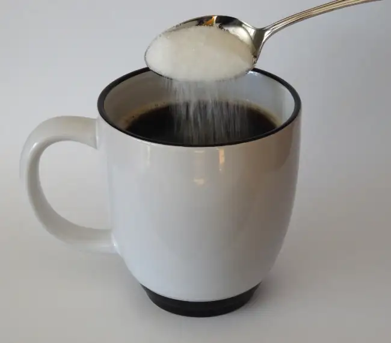
Solutions¶
Solutions have previously been defined as homogeneous mixtures, meaning that the composition of the mixture (and therefore its properties) is uniform throughout its entire volume. Solutions occur frequently in nature and have also been implemented in many forms of manmade technology. A more thorough treatment of solution properties is provided in the chapter on solutions and colloids, but provided here is an introduction to some of the basic properties of solutions.
The relative amount of a given solution component is known as its concentration. Often, though not always, a solution contains one component with a concentration that is significantly greater than that of all other components. This component is called the solvent and may be viewed as the medium in which the other components are dispersed, or dissolved. Solutions in which water is the solvent are, of course, very common on our planet. A solution in which water is the solvent is called an aqueous solution.
A solute is a component of a solution that is typically present at a much lower concentration than the solvent. Solute concentrations are often described with qualitative terms such as dilute (of relatively low concentration) and concentrated (of relatively high concentration).
Concentrations may be quantitatively assessed using a wide variety of measurement units, each convenient for particular applications. Molarity (M) is a useful concentration unit for many applications in chemistry. Molarity is defined as the number of moles of solute in exactly 1 liter (1 L) of the solution:
Example 3.14 Calculating Molar Concentrations
A 355-mL soft drink sample contains 0.133 mol of sucrose (table sugar). What is the molar concentration of sucrose in the beverage?
Solution
Since the molar amount of solute and the volume of solution are both given, the molarity can be calculated using the definition of molarity. Per this definition, the solution volume must be converted from mL to L:
Check Your Learning
A teaspoon of table sugar contains about 0.01 mol sucrose. What is the molarity of sucrose if a teaspoon of sugar has been dissolved in a cup of tea with a volume of 200 mL?
Answer:
0.05 M
Example 3.15 Deriving Moles and Volumes from Molar Concentrations
How much sugar (mol) is contained in a modest sip (~10 mL) of the soft drink from Example 3.14?
Solution
Rearrange the definition of molarity to isolate the quantity sought, moles of sugar, then substitute the value for molarity derived in Example 3.14, 0.375 M:
Check Your Learning
What volume (mL) of the sweetened tea described in Example 3.14 contains the same amount of sugar (mol) as 10 mL of the soft drink in this example?
Answer:
80 mL
Example 3.16 Calculating Molar Concentrations from the Mass of Solute
Distilled white vinegar (Figure 3.15) is a solution of acetic acid, CH3CO2H, in water. A 0.500-L vinegar solution contains 25.2 g of acetic acid. What is the concentration of the acetic acid solution in units of molarity?
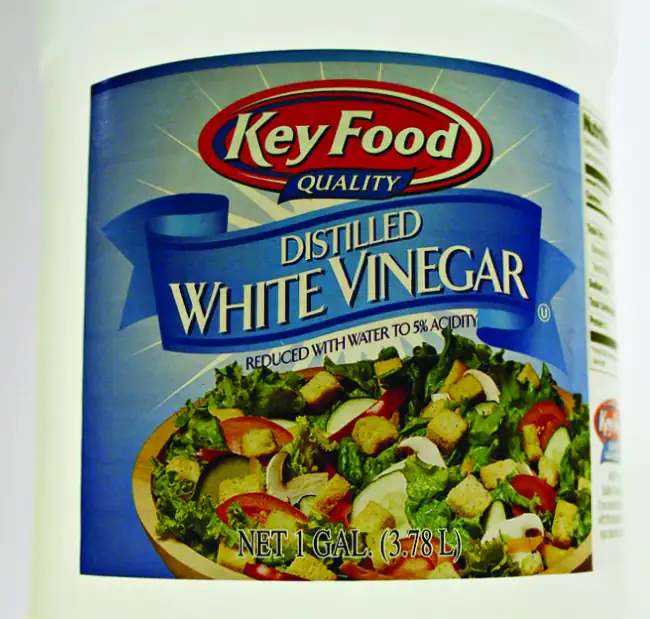
Solution
As in previous examples, the definition of molarity is the primary equation used to calculate the quantity sought. Since the mass of solute is provided instead of its molar amount, use the solute’s molar mass to obtain the amount of solute in moles:
Check Your Learning
Calculate the molarity of 6.52 g of CoCl2 (128.9 g/mol) dissolved in an aqueous solution with a total volume of 75.0 mL.
Answer:
0.674 M
Example 3.17 Determining the Mass of Solute in a Given Volume of Solution
How many grams of NaCl are contained in 0.250 L of a 5.30-M solution?
Solution
The volume and molarity of the solution are specified, so the amount (mol) of solute is easily computed as demonstrated in Example 3.15:
Finally, this molar amount is used to derive the mass of NaCl:
Check Your Learning
How many grams of CaCl2 (110.98 g/mol) are contained in 250.0 mL of a 0.200-M solution of calcium chloride?
Answer:
5.55 g CaCl2
When performing calculations stepwise, as in Example 3.17, it is important to refrain from rounding any intermediate calculation results, which can lead to rounding errors in the final result. In Example 3.17, the molar amount of NaCl computed in the first step, 1.325 mol, would be properly rounded to 1.32 mol if it were to be reported; however, although the last digit (5) is not significant, it must be retained as a guard digit in the intermediate calculation. If the guard digit had not been retained, the final calculation for the mass of NaCl would have been 77.1 g, a difference of 0.3 g.
In addition to retaining a guard digit for intermediate calculations, rounding errors may also be avoided by performing computations in a single step (see Example 3.18). This eliminates intermediate steps so that only the final result is rounded.
Example 3.18 Determining the Volume of Solution Containing a Given Mass of Solute
In Example 3.16, the concentration of acetic acid in white vinegar was determined to be 0.839 M. What volume of vinegar contains 75.6 g of acetic acid?
Solution
First, use the molar mass to calculate moles of acetic acid from the given mass:
Then, use the molarity of the solution to calculate the volume of solution containing this molar amount of solute:
Combining these two steps into one yields:
Check Your Learning
What volume of a 1.50-M KBr solution contains 66.0 g KBr?
Answer:
0.370 L
Dilution of Solutions¶
Dilution is the process whereby the concentration of a solution is lessened by the addition of solvent. For example, a glass of iced tea becomes increasingly diluted as the ice melts. The water from the melting ice increases the volume of the solvent (water) and the overall volume of the solution (iced tea), thereby reducing the relative concentrations of the solutes that give the beverage its taste (Figure 3.16).
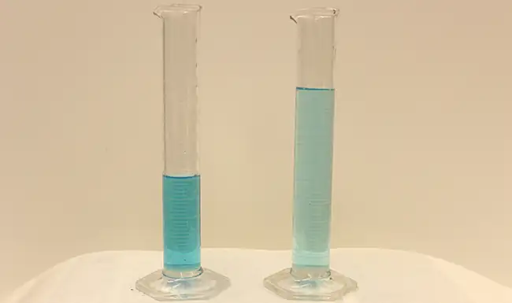
Dilution is also a common means of preparing solutions of a desired concentration. By adding solvent to a measured portion of a more concentrated stock solution, a solution of lesser concentration may be prepared. For example, commercial pesticides are typically sold as solutions in which the active ingredients are far more concentrated than is appropriate for their application. Before they can be used on crops, the pesticides must be diluted. This is also a very common practice for the preparation of a number of common laboratory reagents.
A simple mathematical relationship can be used to relate the volumes and concentrations of a solution before and after the dilution process. According to the definition of molarity, the number of moles of solute in a solution (n) is equal to the product of the solution’s molarity (M) and its volume in liters (L):
Expressions like these may be written for a solution before and after it is diluted:
where the subscripts “1” and “2” refer to the solution before and after the dilution, respectively. Since the dilution process does not change the amount of solute in the solution, n1 = n2. Thus, these two equations may be set equal to one another:
This relation is commonly referred to as the dilution equation. Although this equation uses molarity as the unit of concentration and liters as the unit of volume, other units of concentration and volume may be used as long as the units properly cancel per the factor-label method. Reflecting this versatility, the dilution equation is often written in the more general form:
where C and V are concentration and volume, respectively.
Link to Learning
Use the simulation to explore the relations between solute amount, solution volume, and concentration and to confirm the dilution equation.
Example 3.19 Determining the Concentration of a Diluted Solution
If 0.850 L of a 5.00-M solution of copper nitrate, Cu(NO3)2, is diluted to a volume of 1.80 L by the addition of water, what is the molarity of the diluted solution?
Solution
The stock concentration, C1, and volume, V1, are provided as well as the volume of the diluted solution, V2. Rearrange the dilution equation to isolate the unknown property, the concentration of the diluted solution, C2:
Since the stock solution is being diluted by more than two-fold (volume is increased from 0.85 L to 1.80 L), the diluted solution’s concentration is expected to be less than one-half 5 M. This ballpark estimate will be compared to the calculated result to check for any gross errors in computation (for example, such as an improper substitution of the given quantities). Substituting the given values for the terms on the right side of this equation yields:
This result compares well to our ballpark estimate (it’s a bit less than one-half the stock concentration, 5 M).
Check Your Learning
What is the concentration of the solution that results from diluting 25.0 mL of a 2.04-M solution of CH3OH to 500.0 mL?
Answer:
0.102 M CH3OH
Example 3.20 Volume of a Diluted Solution
What volume of 0.12 M HBr can be prepared from 11 mL (0.011 L) of 0.45 M HBr?
Solution
Provided are the volume and concentration of a stock solution, V1 and C1, and the concentration of the resultant diluted solution, C2. Find the volume of the diluted solution, V2 by rearranging the dilution equation to isolate V2:
Since the diluted concentration (0.12 M) is slightly more than one-fourth the original concentration (0.45 M), the volume of the diluted solution is expected to be roughly four times the original volume, or around 44 mL. Substituting the given values and solving for the unknown volume yields:
The volume of the 0.12-M solution is 0.041 L (41 mL). The result is reasonable and compares well with the rough estimate.
Check Your Learning
A laboratory experiment calls for 0.125 M HNO3. What volume of 0.125 M HNO3 can be prepared from 0.250 L of 1.88 M HNO3?
Answer:
3.76 L
Example 3.21 Volume of a Concentrated Solution Needed for Dilution
What volume of 1.59 M KOH is required to prepare 5.00 L of 0.100 M KOH?
Solution
Given are the concentration of a stock solution, C1, and the volume and concentration of the resultant diluted solution, V2 and C2. Find the volume of the stock solution, V1 by rearranging the dilution equation to isolate V1:
Since the concentration of the diluted solution 0.100 M is roughly one-sixteenth that of the stock solution (1.59 M), the volume of the stock solution is expected to be about one-sixteenth that of the diluted solution, or around 0.3 liters. Substituting the given values and solving for the unknown volume yields:
Thus, 0.314 L of the 1.59-M solution is needed to prepare the desired solution. This result is consistent with the rough estimate.
Check Your Learning
What volume of a 0.575-M solution of glucose, C6H12O6, can be prepared from 50.00 mL of a 3.00-M glucose solution?
Answer:
0.261 L
3.4 Other Units for Solution Concentrations¶
Learning Objectives
By the end of this section, you will be able to:
- Define the concentration units of mass percentage, volume percentage, mass-volume percentage, parts-per-million (ppm), and parts-per-billion (ppb)
- Perform computations relating a solution’s concentration and its components’ volumes and/or masses using these units
The previous section introduced molarity, a very useful measurement unit for evaluating the concentration of solutions. However, molarity is only one measure of concentration. This section will describe some other units of concentration that are commonly used in various applications, either for convenience or by convention.
Mass Percentage¶
Earlier in this chapter, percent composition was introduced as a measure of the relative amount of a given element in a compound. Percentages are also commonly used to express the composition of mixtures, including solutions. The mass percentage of a solution component is defined as the ratio of the component’s mass to the solution’s mass, expressed as a percentage:
Mass percentage is also referred to by similar names such as percent mass, percent weight, weight/weight percent, and other variations on this theme. The most common symbol for mass percentage is simply the percent sign, %, although more detailed symbols are often used including %mass, %weight, and (w/w)%. Use of these more detailed symbols can prevent confusion of mass percentages with other types of percentages, such as volume percentages (to be discussed later in this section).
Mass percentages are popular concentration units for consumer products. The label of a typical liquid bleach bottle (Figure 3.17) cites the concentration of its active ingredient, sodium hypochlorite (NaOCl), as being 7.4%. A 100.0-g sample of bleach would therefore contain 7.4 g of NaOCl.
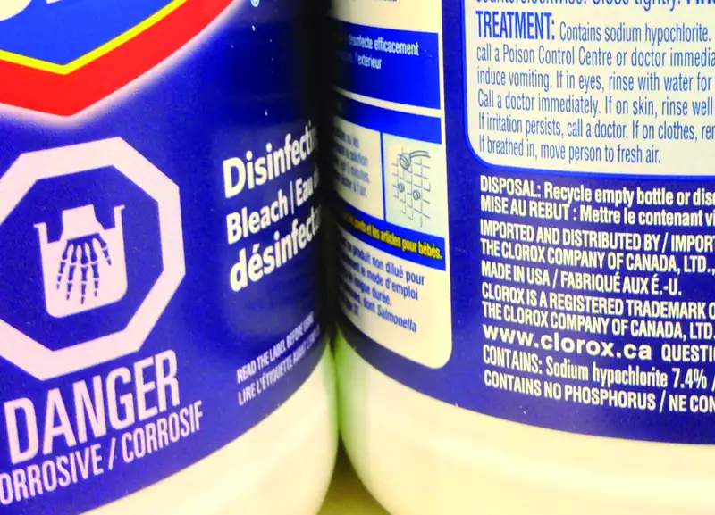
Example 3.22 Calculation of Percent by Mass
A 5.0-g sample of spinal fluid contains 3.75 mg (0.00375 g) of glucose. What is the percent by mass of glucose in spinal fluid?
Solution
The spinal fluid sample contains roughly 4 mg of glucose in 5000 mg of fluid, so the mass fraction of glucose should be a bit less than one part in 1000, or about 0.1%. Substituting the given masses into the equation defining mass percentage yields:
The computed mass percentage agrees with our rough estimate (it’s a bit less than 0.1%).
Note that while any mass unit may be used to compute a mass percentage (mg, g, kg, oz, and so on), the same unit must be used for both the solute and the solution so that the mass units cancel, yielding a dimensionless ratio. In this case, the solute mass unit in the numerator was converted from mg to g to match the units in the denominator. Alternatively, the spinal fluid mass unit in the denominator could have been converted from g to mg instead. As long as identical mass units are used for both solute and solution, the computed mass percentage will be correct.
Check Your Learning
A bottle of a tile cleanser contains 135 g of HCl and 775 g of water. What is the percent by mass of HCl in this cleanser?
Answer:
14.8%
Example 3.23 Calculations using Mass Percentage
“Concentrated” hydrochloric acid is an aqueous solution of 37.2% HCl that is commonly used as a laboratory reagent. The density of this solution is 1.19 g/mL. What mass of HCl is contained in 0.500 L of this solution?
Solution
The HCl concentration is near 40%, so a 100-g portion of this solution would contain about 40 g of HCl. Since the solution density isn’t greatly different from that of water (1 g/mL), a reasonable estimate of the HCl mass in 500 g (0.5 L) of the solution is about five times greater than that in a 100 g portion, or 5 \(\times\) 40 = 200 g. In order to derive the mass of solute in a solution from its mass percentage, the mass of the solution must be known. Using the solution density given, convert the solution’s volume to mass, and then use the given mass percentage to calculate the solute mass. This mathematical approach is outlined in this flowchart:
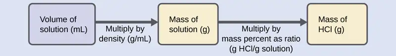
For proper unit cancellation, the 0.500-L volume is converted into 500 mL, and the mass percentage is expressed as a ratio, 37.2 g HCl/g solution:
This mass of HCl is consistent with our rough estimate of approximately 200 g.
Check Your Learning
What volume of concentrated HCl solution contains 125 g of HCl?
Answer:
282 mL
Volume Percentage¶
Liquid volumes over a wide range of magnitudes are conveniently measured using common and relatively inexpensive laboratory equipment. The concentration of a solution formed by dissolving a liquid solute in a liquid solvent is therefore often expressed as a volume percentage, %vol or (v/v)%:
Example 3.24 Calculations using Volume Percentage
Rubbing alcohol (isopropanol) is usually sold as a 70%vol aqueous solution. If the density of isopropyl alcohol is 0.785 g/mL, how many grams of isopropyl alcohol are present in a 355 mL bottle of rubbing alcohol?
Solution
Per the definition of volume percentage, the isopropanol volume is 70% of the total solution volume. Multiplying the isopropanol volume by its density yields the requested mass:
Check Your Learning
Wine is approximately 12% ethanol (CH3CH2OH) by volume. Ethanol has a molar mass of 46.06 g/mol and a density 0.789 g/mL. How many moles of ethanol are present in a 750-mL bottle of wine?
Answer:
1.5 mol ethanol
Mass-Volume Percentage¶
“Mixed” percentage units, derived from the mass of solute and the volume of solution, are popular for certain biochemical and medical applications. A mass-volume percent is a ratio of a solute’s mass to the solution’s volume expressed as a percentage. The specific units used for solute mass and solution volume may vary, depending on the solution. For example, physiological saline solution, used to prepare intravenous fluids, has a concentration of 0.9% mass/volume (m/v), indicating that the composition is 0.9 g of solute per 100 mL of solution. The concentration of glucose in blood (commonly referred to as “blood sugar”) is also typically expressed in terms of a mass-volume ratio. Though not expressed explicitly as a percentage, its concentration is usually given in milligrams of glucose per deciliter (100 mL) of blood (Figure 3.18).
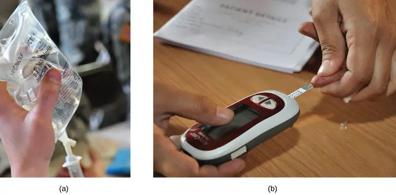
Parts per Million and Parts per Billion¶
Very low solute concentrations are often expressed using appropriately small units such as parts per million (ppm) or parts per billion (ppb). Like percentage (“part per hundred”) units, ppm and ppb may be defined in terms of masses, volumes, or mixed mass-volume units. There are also ppm and ppb units defined with respect to numbers of atoms and molecules.
The mass-based definitions of ppm and ppb are given here:
Both ppm and ppb are convenient units for reporting the concentrations of pollutants and other trace contaminants in water. Concentrations of these contaminants are typically very low in treated and natural waters, and their levels cannot exceed relatively low concentration thresholds without causing adverse effects on health and wildlife. For example, the EPA has identified the maximum safe level of fluoride ion in tap water to be 4 ppm. Inline water filters are designed to reduce the concentration of fluoride and several other trace-level contaminants in tap water (Figure 3.19).
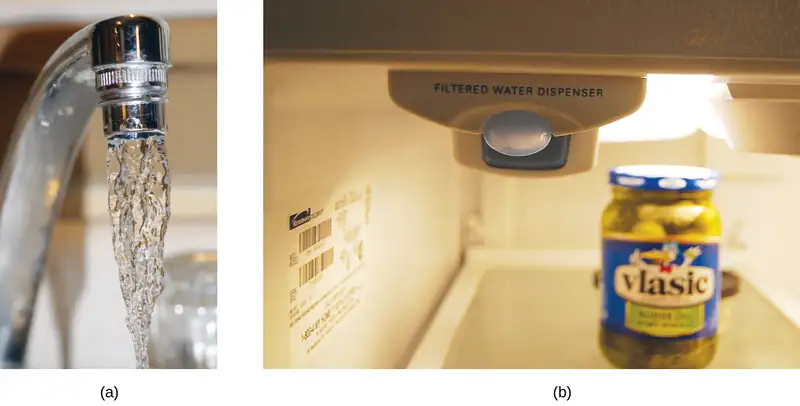
Example 3.25 Calculation of Parts per Million and Parts per Billion Concentrations
According to the EPA, when the concentration of lead in tap water reaches 15 ppb, certain remedial actions must be taken. What is this concentration in ppm? At this concentration, what mass of lead (μg) would be contained in a typical glass of water (300 mL)?
Solution
The definitions of the ppm and ppb units may be used to convert the given concentration from ppb to ppm. Comparing these two unit definitions shows that ppm is 1000 times greater than ppb (1 ppm = 103 ppb). Thus:
The definition of the ppb unit may be used to calculate the requested mass if the mass of the solution is provided. Since the volume of solution (300 mL) is given, its density must be used to derive the corresponding mass. Assume the density of tap water to be roughly the same as that of pure water (~1.00 g/mL), since the concentrations of any dissolved substances should not be very large. Rearranging the equation defining the ppb unit and substituting the given quantities yields:
Finally, convert this mass to the requested unit of micrograms:
Check Your Learning
A 50.0-g sample of industrial wastewater was determined to contain 0.48 mg of mercury. Express the mercury concentration of the wastewater in ppm and ppb units.
Answer:
9.6 ppm, 9600 ppb
Chapter Review¶
Key Terms¶
- aqueous solution
- solution for which water is the solvent
- Avogadro’s number (NA)
- experimentally determined value of the number of entities comprising 1 mole of substance, equal to 6.022 \(\times\) 1023 mol−1
- concentrated
- qualitative term for a solution containing solute at a relatively high concentration
- concentration
- quantitative measure of the relative amounts of solute and solvent present in a solution
- dilute
- qualitative term for a solution containing solute at a relatively low concentration
- dilution
- process of adding solvent to a solution in order to lower the concentration of solutes
- dissolved
- describes the process by which solute components are dispersed in a solvent
- empirical formula mass
- sum of average atomic masses for all atoms represented in an empirical formula
- formula mass
- sum of the average masses for all atoms represented in a chemical formula; for covalent compounds, this is also the molecular mass
- mass percentage
- ratio of solute-to-solution mass expressed as a percentage
- mass-volume percent
- ratio of solute mass to solution volume, expressed as a percentage
- molar mass
- mass in grams of 1 mole of a substance
- molarity (M)
- unit of concentration, defined as the number of moles of solute dissolved in 1 liter of solution
- mole
- amount of substance containing the same number of atoms, molecules, ions, or other entities as the number of atoms in exactly 12 grams of 12C
- parts per billion (ppb)
- ratio of solute-to-solution mass multiplied by 109
- parts per million (ppm)
- ratio of solute-to-solution mass multiplied by 106
- percent composition
- percentage by mass of the various elements in a compound
- solute
- solution component present in a concentration less than that of the solvent
- solvent
- solution component present in a concentration that is higher relative to other components
- volume percentage
- ratio of solute-to-solution volume expressed as a percentage
Key Equations¶
3.2 Determining Empirical and Molecular Formulas¶
| \(\%\:\text{X}=\:\frac{\text{mass X}}{\text{mass compound}}\:\times\:100\%\) |
| \(\frac{\text{molecular or molar mass}\:\left( \text{amu or}\;\frac{\text{g}}{\text{mol}} \right)}{\text{empirical formula mass}\:\left( \text{amu or}\;\frac{\text{g}}{\text{mol}} \right)}\:=n\:\text{formula units/molecule}\) |
| (AxBy)n = AnxBny |
3.3 Molarity¶
| \(M=\:\frac{\text{mol solute}}{\text{L solution}}\) |
| C1V1 = C2V2 |
3.4 Other Units for Solution Concentrations¶
| \(\text{Percent by mass}=\:\frac{\text{mass of solute}}{\text{mass of solution}}\:\times\:100\) |
| \(\text{ppm}=\:\frac{\text{mass solute}}{\text{mass solution}}\:\times\:{10}^{6}\:\text{ppm}\) |
| \(\text{ppb}=\:\frac{\text{mass solute}}{\text{mass solution}}\:\times\:{10}^{9}\:\text{ppb}\) |
Key Concepts and Summary¶
3.1 Formula Mass and the Mole Concept¶
The formula mass of a substance is the sum of the average atomic masses of each atom represented in the chemical formula and is expressed in atomic mass units. The formula mass of a covalent compound is also called the molecular mass. A convenient amount unit for expressing very large numbers of atoms or molecules is the mole. Experimental measurements have determined the number of entities composing 1 mole of substance to be 6.022 \(\times\) 1023, a quantity called Avogadro’s number. The mass in grams of 1 mole of substance is its molar mass. Due to the use of the same reference substance in defining the atomic mass unit and the mole, the formula mass (amu) and molar mass (g/mol) for any substance are numerically equivalent (for example, one H2O molecule weighs approximately18 amu and 1 mole of H2O molecules weighs approximately 18 g).
3.2 Determining Empirical and Molecular Formulas¶
The chemical identity of a substance is defined by the types and relative numbers of atoms composing its fundamental entities (molecules in the case of covalent compounds, ions in the case of ionic compounds). A compound’s percent composition provides the mass percentage of each element in the compound, and it is often experimentally determined and used to derive the compound’s empirical formula. The empirical formula mass of a covalent compound may be compared to the compound’s molecular or molar mass to derive a molecular formula.
3.3 Molarity¶
Solutions are homogeneous mixtures. Many solutions contain one component, called the solvent, in which other components, called solutes, are dissolved. An aqueous solution is one for which the solvent is water. The concentration of a solution is a measure of the relative amount of solute in a given amount of solution. Concentrations may be measured using various units, with one very useful unit being molarity, defined as the number of moles of solute per liter of solution. The solute concentration of a solution may be decreased by adding solvent, a process referred to as dilution. The dilution equation is a simple relation between concentrations and volumes of a solution before and after dilution.
3.4 Other Units for Solution Concentrations¶
In addition to molarity, a number of other solution concentration units are used in various applications. Percentage concentrations based on the solution components’ masses, volumes, or both are useful for expressing relatively high concentrations, whereas lower concentrations are conveniently expressed using ppm or ppb units. These units are popular in environmental, medical, and other fields where mole-based units such as molarity are not as commonly used.
Exercises¶
3.1 Formula Mass and the Mole Concept¶
1. What is the total mass (amu) of carbon in each of the following molecules?
(a) CH4
(b) CHCl3
(c) C12H10O6
(d) CH3CH2CH2CH2CH3
Answer
(a) 12.01 amu; (b) 12.01 amu; (c) 144.12 amu; (d) 60.05 amu
2. What is the total mass of hydrogen in each of the molecules?
(a) CH4
(b) CHCl3
(c) C12H10O6
(d) CH3CH2CH2CH2CH3
3. Calculate the molecular or formula mass of each of the following:
(a) P4
(b) H2O
(c) Ca(NO3)2
(d) CH3CO2H (acetic acid)
(e) C12H22O11 (sucrose, cane sugar)
Answer
(a) 123.896 amu; (b) 18.015 amu; (c) 164.086 amu; (d) 60.052 amu; (e) 342.297 amu
4. Determine the molecular mass of the following compounds:
(a)
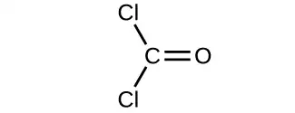
(b)
(c)
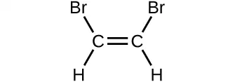
(d)
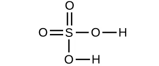
5. Determine the molecular mass of the following compounds:
(a)
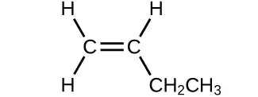
(b)
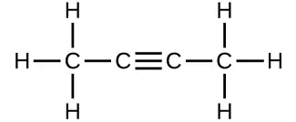
(c)
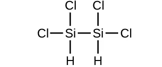
(d)
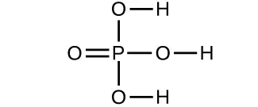
Answer
(a) 56.107 amu; (b) 54.091 amu; (c) 199.9976 amu; (d) 97.9950 amu
6. Which molecule has a molecular mass of 28.05 amu?
(a)
(b)
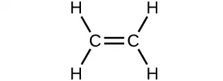
(c)
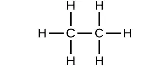
7. Write a sentence that describes how to determine the number of moles of a compound in a known mass of the compound using its molecular formula.
Answer
Use the molecular formula to find the molar mass; to obtain the number of moles, divide the mass of compound by the molar mass of the compound expressed in grams.
8. Compare 1 mole of H2, 1 mole of O2, and 1 mole of F2.
(a) Which has the largest number of molecules? Explain why.
(b) Which has the greatest mass? Explain why.
9. Which contains the greatest mass of oxygen: 0.75 mol of ethanol (C2H5OH), 0.60 mol of formic acid (HCO2H), or 1.0 mol of water (H2O)? Explain why.
Answer
Formic acid. Its formula has twice as many oxygen atoms as the other two compounds (one each). Therefore, 0.60 mol of formic acid would be equivalent to 1.20 mol of a compound containing a single oxygen atom.
10. Which contains the greatest number of moles of oxygen atoms: 1 mol of ethanol (C2H5OH), 1 mol of formic acid (HCO2H), or 1 mol of water (H2O)? Explain why.
11. How are the molecular mass and the molar mass of a compound similar and how are they different?
Answer
The two masses have the same numerical value, but the units are different: The molecular mass is the mass of 1 molecule while the molar mass is the mass of 6.022 \(\times\) 1023 molecules.
12. Calculate the molar mass of each of the following compounds:
(a) hydrogen fluoride, HF
(b) ammonia, NH3
(c) nitric acid, HNO3
(d) silver sulfate, Ag2SO4
(e) boric acid, B(OH)3
13. Calculate the molar mass of each of the following:
(a) S8
(b) C5H12
(c) Sc2(SO4)3
(d) CH3COCH3 (acetone)
(e) C6H12O6 (glucose)
Answer
(a) 256.48 g/mol; (b) 72.150 g mol−1; (c) 378.103 g mol−1; (d) 58.080 g mol−1; (e) 180.158 g mol−1
14. Calculate the empirical or molecular formula mass and the molar mass of each of the following minerals:
(a) limestone, CaCO3
(b) halite, NaCl
(c) beryl, Be3Al2Si6O18
(d) malachite, Cu2(OH)2CO3
(e) turquoise, CuAl6(PO4)4(OH)8(H2O)4
15. Calculate the molar mass of each of the following:
(a) the anesthetic halothane, C2HBrClF3
(b) the herbicide paraquat, C12H14N2Cl2
(c) caffeine, C8H10N4O2
(d) urea, CO(NH2)2
(e) a typical soap, C17H35CO2Na
Answer
(a) 197.382 g mol−1; (b) 257.163 g mol−1; (c) 194.193 g mol−1; (d) 60.056 g mol−1; (e) 306.464 g mol−1
16. Determine the number of moles of compound and the number of moles of each type of atom in each of the following:
(a) 25.0 g of propylene, C3H6
(b) 3.06 \(\times\) 10−3 g of the amino acid glycine, C2H5NO2
(c) 25 lb of the herbicide Treflan, C13H16N2O4F (1 lb = 454 g)
(d) 0.125 kg of the insecticide Paris Green, Cu4(AsO3)2(CH3CO2)2
(e) 325 mg of aspirin, C6H4(CO2H)(CO2CH3)
17. Determine the mass of each of the following:
(a) 0.0146 mol KOH
(b) 10.2 mol ethane, C2H6
(c) 1.6 \(\times\) 10−3 mol Na2 SO4
(d) 6.854 \(\times\) 103 mol glucose, C6 H12 O6
(e) 2.86 mol Co(NH3)6Cl3
Answer
(a) 0.819 g; (b) 307 g; (c) 0.23 g; (d) 1.235 \(\times\) 106 g (1235 kg); (e) 765 g
18. Determine the number of moles of the compound and determine the number of moles of each type of atom in each of the following:
(a) 2.12 g of potassium bromide, KBr
(b) 0.1488 g of phosphoric acid, H3PO4
(c) 23 kg of calcium carbonate, CaCO3
(d) 78.452 g of aluminum sulfate, Al2(SO4)3
(e) 0.1250 mg of caffeine, C8H10N4O2
19. Determine the mass of each of the following:
(a) 2.345 mol LiCl
(b) 0.0872 mol acetylene, C2H2
(c) 3.3 \(\times\) 10−2 mol Na2CO3
(d) 1.23 \(\times\) 103 mol fructose, C6H12O6
(e) 0.5758 mol FeSO4(H2O)7
Answer
(a) 99.41 g; (b) 2.27 g; (c) 3.5 g; (d) 222 kg; (e) 160.1 g
20. The approximate minimum daily dietary requirement of the amino acid leucine, C6H13NO2, is 1.1 g. What is this requirement in moles?
21. Determine the mass in grams of each of the following:
(a) 0.600 mol of oxygen atoms
(b) 0.600 mol of oxygen molecules, O2
(c) 0.600 mol of ozone molecules, O3
Answer
(a) 9.60 g; (b) 19.2 g; (c) 28.8 g
22. A 55-kg woman has 7.5 \(\times\) 10−3 mol of hemoglobin (molar mass = 64,456 g/mol) in her blood. How many hemoglobin molecules is this? What is this quantity in grams?
23. Determine the number of atoms and the mass of zirconium, silicon, and oxygen found in 0.3384 mol of zircon, ZrSiO4, a semiprecious stone.
Answer
zirconium: 2.038 \(\times\) 1023 atoms; 30.87 g; silicon: 2.038 \(\times\) 1023 atoms; 9.504 g; oxygen: 8.151 \(\times\) 1023 atoms; 21.66 g
24. Determine which of the following contains the greatest mass of hydrogen: 1 mol of CH4, 0.6 mol of C6H6, or 0.4 mol of C3H8.
25. Determine which of the following contains the greatest mass of aluminum: 122 g of AlPO4, 266 g of Al2Cl6, or 225 g of Al2S3.
Answer
AlPO4: 1.000 mol, or 26.98 g Al; Al2Cl6: 1.994 mol, or 53.74 g Al; Al2S3: 3.00 mol, or 80.94 g Al; The Al2S3 sample thus contains the greatest mass of Al.
26. Diamond is one form of elemental carbon. An engagement ring contains a diamond weighing 1.25 carats (1 carat = 200 mg). How many atoms are present in the diamond?
27. The Cullinan diamond was the largest natural diamond ever found (January 25, 1905). It weighed 3104 carats (1 carat = 200 mg). How many carbon atoms were present in the stone?
Answer
3.113 \(\times\) 1025 C atoms
28. One 55-gram serving of a particular cereal supplies 270 mg of sodium, 11% of the recommended daily allowance. How many moles and atoms of sodium are in the recommended daily allowance?
29. A certain nut crunch cereal contains 11.0 grams of sugar (sucrose, C12H22O11) per serving size of 60.0 grams. How many servings of this cereal must be eaten to consume 0.0278 moles of sugar?
Answer
0.865 servings, or about 1 serving.
30. A tube of toothpaste contains 0.76 g of sodium monofluorophosphate (Na2PO3F) in 100 mL.
(a) What mass of fluorine atoms in mg was present?
(b) How many fluorine atoms were present?
31. Which of the following represents the least number of molecules?
(a) 20.0 g of H2O (18.02 g/mol)
(b) 77.0 g of CH4 (16.06 g/mol)
(c) 68.0 g of C3H6 (42.08 g/mol)
(d) 100.0 g of N2O (44.02 g/mol)
(e) 84.0 g of HF (20.01 g/mol)
Answer
20.0 g H2O represents the least number of molecules since it has the least number of moles.
3.2 Determining Empirical and Molecular Formulas¶
32. What information is needed to determine the molecular formula of a compound from the empirical formula?
33. Calculate the following to four significant figures:
(a) the percent composition of ammonia, NH3
(b) the percent composition of photographic fixer solution (“hypo”), Na2S2O3
(c) the percent of calcium ion in Ca3(PO4)2
Answer
(a) % N = 82.24%, % H = 17.76%; (b) % Na = 29.08%, % S = 40.56%, % O = 30.36%; (c) % Ca2+ = 38.76%
34. Determine the following to four significant figures:
(a) the percent composition of hydrazoic acid, HN3
(b) the percent composition of TNT, C6H2(CH3)(NO2)3
(c) the percent of SO42– in Al2(SO4)3
35. Determine the percent ammonia, NH3, in Co(NH3)6Cl3, to three significant figures.
Answer
% NH3 = 38.2%
36. Determine the percent water in CuSO4∙5H2O to three significant figures.
37. Determine the empirical formulas for compounds with the following percent compositions:
(a) 15.8% carbon and 84.2% sulfur
(b) 40.0% carbon, 6.7% hydrogen, and 53.3% oxygen
Answer
(a) CS2; (b) CH2O
38. Determine the empirical formulas for compounds with the following percent compositions:
(a) 43.6% phosphorus and 56.4% oxygen
(b) 28.7% K, 1.5% H, 22.8% P, and 47.0% O
39. A compound of carbon and hydrogen contains 92.3% C and has a molar mass of 78.1 g/mol. What is its molecular formula?
Answer
C6H6
40. Dichloroethane, a compound that is often used for dry cleaning, contains carbon, hydrogen, and chlorine. It has a molar mass of 99 g/mol. Analysis of a sample shows that it contains 24.3% carbon and 4.1% hydrogen. What is its molecular formula?
41. Determine the empirical and molecular formula for chrysotile asbestos. Chrysotile has the following percent composition: 28.03% Mg, 21.60% Si, 1.16% H, and 49.21% O. The molar mass for chrysotile is 520.8 g/mol.
Answer
Mg3Si2H3O8 (empirical formula), Mg6Si4H6O16 (molecular formula)
42. Polymers are large molecules composed of simple units repeated many times. Thus, they often have relatively simple empirical formulas. Calculate the empirical formulas of the following polymers:
(a) Lucite (Plexiglas); 59.9% C, 8.06% H, 32.0% O
(b) Saran; 24.8% C, 2.0% H, 73.1% Cl
(c) polyethylene; 86% C, 14% H
(d) polystyrene; 92.3% C, 7.7% H
(e) Orlon; 67.9% C, 5.70% H, 26.4% N
43. A major textile dye manufacturer developed a new yellow dye. The dye has a percent composition of 75.95% C, 17.72% N, and 6.33% H by mass with a molar mass of about 240 g/mol. Determine the molecular formula of the dye.
Answer
C15H15N3
3.3 Molarity¶
44. Explain what changes and what stays the same when 1.00 L of a solution of NaCl is diluted to 1.80 L.
45. What information is needed to calculate the molarity of a sulfuric acid solution?
Answer
We need to know the number of moles of sulfuric acid dissolved in the solution and the volume of the solution.
46. A 200-mL sample and a 400-mL sample of a solution of salt have the same molarity. In what ways are the two samples identical? In what ways are these two samples different?
47. Determine the molarity for each of the following solutions:
(a) 0.444 mol of CoCl2 in 0.654 L of solution
(b) 98.0 g of phosphoric acid, H3PO4, in 1.00 L of solution
(c) 0.2074 g of calcium hydroxide, Ca(OH)2, in 40.00 mL of solution
(d) 10.5 kg of Na2SO4·10H2O in 18.60 L of solution
(e) 7.0 \(\times\) 10−3 mol of I2 in 100.0 mL of solution
(f) 1.8 \(\times\) 104 mg of HCl in 0.075 L of solution
Answer
(a) 0.679 M; (b) 1.00 M; (c) 0.06998 M; (d) 1.75 M; (e) 0.070 M; (f) 6.6 M
48. Determine the molarity of each of the following solutions:
(a) 1.457 mol KCl in 1.500 L of solution
(b) 0.515 g of H2SO4 in 1.00 L of solution
(c) 20.54 g of Al(NO3)3 in 1575 mL of solution
(d) 2.76 kg of CuSO4·5H2O in 1.45 L of solution
(e) 0.005653 mol of Br2 in 10.00 mL of solution
(f) 0.000889 g of glycine, C2H5NO2, in 1.05 mL of solution
49. Consider this question: What is the mass of the solute in 0.500 L of 0.30 M glucose, C6H12O6, used for intravenous injection?
(a) Outline the steps necessary to answer the question.
(b) Answer the question.
Answer
(a) determine the number of moles of glucose in 0.500 L of solution; determine the molar mass of glucose; determine the mass of glucose from the number of moles and its molar mass; (b) 27 g
50. Consider this question: What is the mass of solute in 200.0 L of a 1.556-M solution of KBr?
(a) Outline the steps necessary to answer the question.
(b) Answer the question.
51. Calculate the number of moles and the mass of the solute in each of the following solutions:
(a) 2.00 L of 18.5 M H2SO4, concentrated sulfuric acid
(b) 100.0 mL of 3.8 \(\times\) 10−6 M NaCN, the minimum lethal concentration of sodium cyanide in blood serum
(c) 5.50 L of 13.3 M H2CO, the formaldehyde used to “fix” tissue samples
(d) 325 mL of 1.8 \(\times\) 10−6 M FeSO4, the minimum concentration of iron sulfate detectable by taste in drinking water
Answer
(a) 37.0 mol H2SO4, 3.63 \(\times\) 103 g H2SO4; (b) 3.8 \(\times\) 10−7 mol NaCN, 1.9 \(\times\) 10−5 g NaCN; (c) 73.2 mol H2CO, 2.20 kg H2CO; (d) 5.9 \(\times\) 10−7 mol FeSO4, 8.9 \(\times\) 10−5 g FeSO4
52. Calculate the number of moles and the mass of the solute in each of the following solutions:
(a) 325 mL of 8.23 \(\times\) 10−5 M KI, a source of iodine in the diet
(b) 75.0 mL of 2.2 \(\times\) 10−5 M H2SO4, a sample of acid rain
(c) 0.2500 L of 0.1135 M K2CrO4, an analytical reagent used in iron assays
(d) 10.5 L of 3.716 M (NH4)2SO4, a liquid fertilizer
53. Consider this question: What is the molarity of KMnO4 in a solution of 0.0908 g of KMnO4 in 0.500 L of solution?
(a) Outline the steps necessary to answer the question.
(b) Answer the question.
Answer
(a) Determine the molar mass of KMnO4; determine the number of moles of KMnO4 in the solution; from the number of moles and the volume of solution, determine the molarity; (b) 1.15 \(\times\) 10−3 M
54. Consider this question: What is the molarity of HCl if 35.23 mL of a solution of HCl contain 0.3366 g of HCl?
(a) Outline the steps necessary to answer the question.
(b) Answer the question.
55. Calculate the molarity of each of the following solutions:
(a) 0.195 g of cholesterol, C27H46O, in 0.100 L of serum, the average concentration of cholesterol in human serum
(b) 4.25 g of NH3 in 0.500 L of solution, the concentration of NH3 in household ammonia
(c) 1.49 kg of isopropyl alcohol, C3H7OH, in 2.50 L of solution, the concentration of isopropyl alcohol in rubbing alcohol
(d) 0.029 g of I2 in 0.100 L of solution, the solubility of I2 in water at 20 °C
Answer
(a) 5.04 \(\times\) 10−3 M; (b) 0.499 M; (c) 9.92 M; (d) 1.1 \(\times\) 10−3 M
56. Calculate the molarity of each of the following solutions:
(a) 293 g HCl in 666 mL of solution, a concentrated HCl solution
(b) 2.026 g FeCl3 in 0.1250 L of a solution used as an unknown in general chemistry laboratories
(c) 0.001 mg Cd2+ in 0.100 L, the maximum permissible concentration of cadmium in drinking water
(d) 0.0079 g C7H5SNO3 in one ounce (29.6 mL), the concentration of saccharin in a diet soft drink.
57. There is about 1.0 g of calcium, as Ca2+, in 1.0 L of milk. What is the molarity of Ca2+ in milk?
Answer
0.025 M
58. What volume of a 1.00-M Fe(NO3)3 solution can be diluted to prepare 1.00 L of a solution with a concentration of 0.250 M?
59. If 0.1718 L of a 0.3556-M C3H7OH solution is diluted to a concentration of 0.1222 M, what is the volume of the resulting solution?
Answer
0.5000 L
60. If 4.12 L of a 0.850 M-H3PO4 solution is be diluted to a volume of 10.00 L, what is the concentration of the resulting solution?
61. What volume of a 0.33-M C12H22O11 solution can be diluted to prepare 25 mL of a solution with a concentration of 0.025 M?
Answer
1.9 mL
62. What is the concentration of the NaCl solution that results when 0.150 L of a 0.556-M solution is allowed to evaporate until the volume is reduced to 0.105 L?
63. What is the molarity of the diluted solution when each of the following solutions is diluted to the given final volume?
(a) 1.00 L of a 0.250-M solution of Fe(NO3)3 is diluted to a final volume of 2.00 L
(b) 0.5000 L of a 0.1222-M solution of C3H7OH is diluted to a final volume of 1.250 L
(c) 2.35 L of a 0.350-M solution of H3PO4 is diluted to a final volume of 4.00 L
(d) 22.50 mL of a 0.025-M solution of C12H22O11 is diluted to 100.0 mL
Answer
(a) 0.125 M; (b) 0.04888 M; (c) 0.206 M; (d) 0.0056 M
64. What is the final concentration of the solution produced when 225.5 mL of a 0.09988-M solution of Na2CO3 is allowed to evaporate until the solution volume is reduced to 45.00 mL?
65. A 2.00-L bottle of a solution of concentrated HCl was purchased for the general chemistry laboratory. The solution contained 868.8 g of HCl. What is the molarity of the solution?
Answer
11.9 M
66. An experiment in a general chemistry laboratory calls for a 2.00-M solution of HCl. How many mL of 11.9 M HCl would be required to make 250 mL of 2.00 M HCl?
67. What volume of a 0.20-M K2SO4 solution contains 57 g of K2SO4?
Answer
1.6 L
68. The US Environmental Protection Agency (EPA) places limits on the quantities of toxic substances that may be discharged into the sewer system. Limits have been established for a variety of substances, including hexavalent chromium, which is limited to 0.50 mg/L. If an industry is discharging hexavalent chromium as potassium dichromate (K2Cr2O7), what is the maximum permissible molarity of that substance?
3.4 Other Units for Solution Concentrations¶
69. Consider this question: What mass of a concentrated solution of nitric acid (68.0% HNO3 by mass) is needed to prepare 400.0 g of a 10.0% solution of HNO3 by mass?
(a) Outline the steps necessary to answer the question.
(b) Answer the question.
Answer
(a) The dilution equation can be used, appropriately modified to accommodate mass-based concentration units: \(\%\text{mass}_{1}\:\times\:\text{mass}_{1}=\%\text{mass}_{2}\:\times\:\text{mass}_{2}\). This equation can be rearranged to isolate mass1 and the given quantities substituted into this equation. (b) 58.8 g
70. What mass of a 4.00% NaOH solution by mass contains 15.0 g of NaOH?
71. What mass of solid NaOH (97.0% NaOH by mass) is required to prepare 1.00 L of a 10.0% solution of NaOH by mass? The density of the 10.0% solution is 1.109 g/mL.
Answer
114 g
72. What mass of HCl is contained in 45.0 mL of an aqueous HCl solution that has a density of 1.19 g cm–3 and contains 37.21% HCl by mass?
73. The hardness of water (hardness count) is usually expressed in parts per million (by mass) of CaCO3, which is equivalent to milligrams of CaCO3 per liter of water. What is the molar concentration of Ca2+ions in a water sample with a hardness count of 175 mg CaCO3/L?
Answer
1.75 \(\times\) 10−3 M
74. The level of mercury in a stream was suspected to be above the minimum considered safe (1 part per billion by weight). An analysis indicated that the concentration was 0.68 parts per billion. Assume a density of 1.0 g/mL and calculate the molarity of mercury in the stream.
75. In Canada and the United Kingdom, devices that measure blood glucose levels provide a reading in millimoles per liter. If a measurement of 5.3 mM is observed, what is the concentration of glucose (C6H12O6) in mg/dL?
Answer
95 mg/dL
76. A throat spray is 1.40% by mass phenol, C6H5OH, in water. If the solution has a density of 0.9956 g/mL, calculate the molarity of the solution.
77. Copper(I) iodide (CuI) is often added to table salt as a dietary source of iodine. How many moles of CuI are contained in 1.00 lb (454 g) of table salt containing 0.0100% CuI by mass?
Answer
2.38 \(\times\) 10−4 mol
78. A cough syrup contains 5.0% ethyl alcohol, C2H5OH, by mass. If the density of the solution is 0.9928 g/mL, determine the molarity of the alcohol in the cough syrup.
79. D5W is a solution used as an intravenous fluid. It is a 5.0% by mass solution of dextrose (C6H12O6) in water. If the density of D5W is 1.029 g/mL, calculate the molarity of dextrose in the solution.
Answer
0.29 M
80. Find the molarity of a 40.0% by mass aqueous solution of sulfuric acid, H2SO4, for which the density is 1.3057 g/mL.
Adapted from Chemistry 2e by OpenStax, licensed under CC BY 4.0. Access the original for free at openstax.org. Changes: converted to the web reading format of The Open Book Project.
-
Omiatek, Donna M., Amanda J. Bressler, Ann-Sofie Cans, Anne M. Andrews, Michael L. Heien, and Andrew G. Ewing. “The Real Catecholamine Content of Secretory Vesicles in the CNS Revealed by Electrochemical Cytometry.” Scientific Report 3 (2013): 1447, accessed January 14, 2015, doi:10.1038/srep01447. ↩